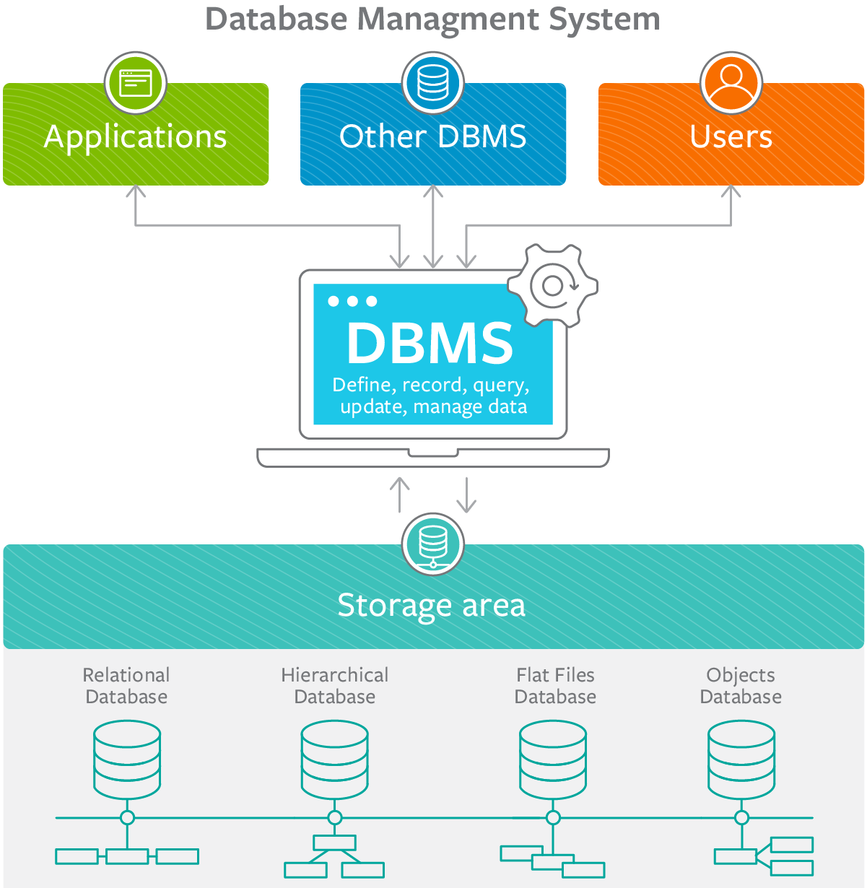

Lesly's Website Homework 1

Welcome to:
Data Management Systems!
How Databases are Managed Efficiently:
Database Management Systems (DBMS) are essential software that do more than just store data: they ensure that data access is efficient, safe, and consistent even under concurrent use or system failures [1]. To accomplish this, DBMSs rely on fundamental properties like ACID which define how transactions behave, enforce mechanisms for handling transactions (including commit and rollback), and apply tools such as indexing and query optimization to improve performance while balancing costs. These features are what let DBMSs support large-scale applications with reliability and speed [2].
ACID & Transactions
In database management systems there is the concept of transactions, which are units of work that must be executed reliably to keep data accurate. Transactions follow the ACID properties—Atomicity, Consistency, Isolation, and Durability. These ensure that each transaction either completes fully or not at all, keeps data in a valid state, remains unaffected by concurrent operations, and preserves results even after system failures [3]. Features like commit and rollback allow users to either save successful changes or undo faulty ones, helping maintain trust in the system. Without these safeguards, databases would be prone to errors, corruption, and conflicts between users [4].
Indexing & Optimization
Efficiency in DBMSs also depends on how data is retrieved and processed. Indexing is a technique that creates shortcuts for the database to quickly locate information without scanning entire tables, significantly speeding up queries[5]. However, indexes come with trade-offs: they require extra storage space and can slow down updates since indexes must also be adjusted [6]. To further improve performance, query optimization techniques are used by the DBMS to determine the most efficient way to execute a request. These features make databases scalable and responsive, ensuring that even complex applications can handle large datasets smoothly.